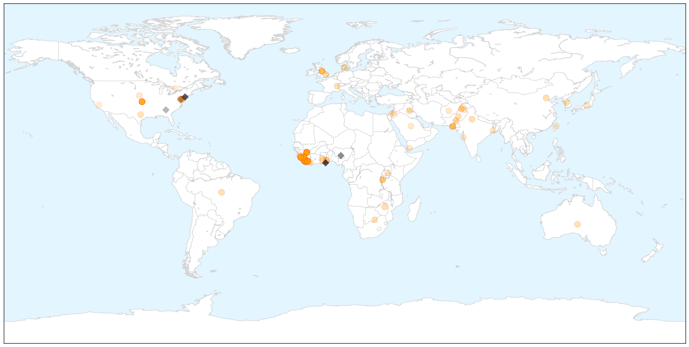
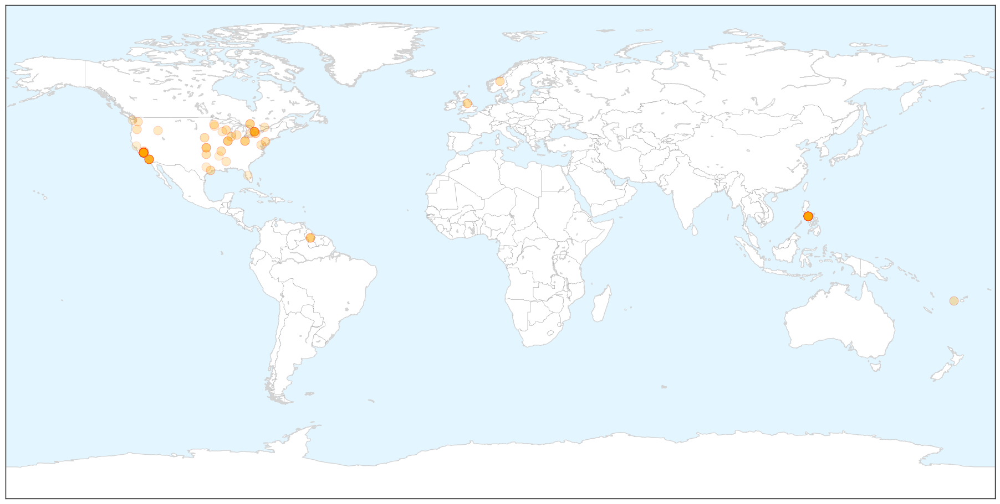

Ebola
30-Day Web Trend
0 alerts, 0 warnings

30-Day Twitter Trend
10 alerts, 3 warnings

Article Locations

X

Article Confidences

Top Articles:
- 1.000
- SLeone hunts infected as Ebola crisis hits 'turning point'
- 1.000
- SLeone hunts infected as Ebola crisis hits 'turning point' - Sierra Leone
- 1.000
- SLeone hunts infected as Ebola crisis hits 'turning point'
- 0.999
- SLeone hunts infected as Ebola crisis hits 'turning point'
- 0.999
- Russia May Start Testing 3 Ebola Vaccines on Primates in March – Ministry
- 0.999
- Liberia says six cases of Ebola remains nationwide --China Economic Net
- 0.998
- Ebola cases fall in West Africa, but challenges remain - WHO
- 0.996
- Sierra Leone health workers go door-to-door in search of Ebola patients
- 0.996
- Rapid Detection and Response Are Essential to Stopping Ebola
- 0.996
- Ebola outbreak declines letting schools to reopen in Liberia
- 0.995
- United Nations cautions against complacency in Ebola progress
- 0.994
- "The Pattern of the Ebola Outbreak Has Changed"
- 0.994
- Attacks on health workers hamper Ebola fight
- 0.993
- Schools In Liberia Finally Reopen Following 6 Month Closure Due To Ebola
- 0.992
- First results from Ebola vaccine trial show acceptable safety profile
- 0.991
- Guinea: Reopening schools safely - partnering with families and communities
- 0.990
- Threat of Deadly Pathogens on the Rise Thanks to Climate Change
- 0.989
- Senegalese Ebola Corridor Delegation Interacts Health Minister
- 0.989
- UN development chief begins last leg of West Africa mission
- 0.989
- Senegalese Ebola Corridor Delegation Interacts Health Minister
- 0.986
- Gov’t explains 60 days zero Ebola plan
- 0.985
- UN to issue first report on Ebola funds
- 0.982
- UN development chief begins last leg of West Africa Ebola mission
- 0.980
- One paragraph that explains why we haven't yet found an Ebola cure
- 0.980
- Governor appoints MSP superintendent
- 0.980
- Teen killed in Essex shootout had 6 weapons
- 0.979
- Researchers volunteer to fight Ebola
- 0.978
- US Ambassador John Hoover raps press on Ebola Prevention Vaccine for Sierra Leone
- 0.977
- MSF Month in Focus: February 2015
- 0.968
- WHH empowers Banana Island, Sierra Leone to resist Ebola
- 0.968
- Sierra Leone launches house to house search to stop spike in Ebola cases
- 0.968
- Diagnosing Ebola in Sierra Leone
- 0.966
- KCCR awaits WHO certification
- 0.952
- My journey on the tortuous Ebola trail
- 0.951
- President Koroma Hosts UNDP Administrator
- 0.951
- Health Ministry Receives More Items for Ebola Fight
- 0.951
- Mambu Challenges 'Credibility' of Auditor Report
- 0.951
- WHO Mutilated Allison's Body? Eyewitness
- 0.951
- Liberia: U.S. Congressional Staffers' Delegation Calls On Ellen
- 0.951
- Missing Ebola Funds – Anti-Corruption steps in
- 0.951
- Sierra Leone, Belgium Envoys Present Credentials
- 0.951
- Taylor-Era Wartime Timber Company Penalized, Accused of PUP Breach
- 0.951
- Civil Society Meet On Trial Vaccines
- 0.951
- Don't Elect Childish Leadership
- 0.951
- Why China's Leaders See Corruption as a Mortal Threat
- 0.951
- Uzbek Rights Activists Prevented From Leaving For Seoul To Get Award
- 0.951
- BJP dubs Mamata's reshuffling exercise as serving lollipops
- 0.943
- Sierra Leone launches house to house search to stop spike in Ebola cases
- 0.941
- Sierra Leone: Sierra Leone goes door-to-door to fight Ebola
- 0.938
- Youngstown News, Success in fight against Ebola
Showing top 50 articles...
Top Tweets:
- 0.952
- Paper Test Quickly Detects Ebola Dengue And Yellow Fever - Scientific American http://t.co/3KxH69Objk ebola EVD
- 0.916
- RT: .@SavetheChildren has distributed Ebola prevention kits to 783 schools & provided 532 schools w/ Ebola safety training in …
- 0.911
- [GUARDIAN] Ebola: British health worker brought to UK from Sierra Leone for assessment
- 0.896
- RT: 22% of patients Hosp in SL between 2011&2014 had anti-Ebola virus (EBOV) IgG or IgM suggesting prior exposure 2 Eb…
- 0.851
- RITE (Rapid Isolation and Treatment of Ebola) teams fighting the epidemic in Liberia. Read more http://t.co/Qq9zABRQyU
- 0.832
- RT: RITE (Rapid Isolation and Treatment of Ebola) teams fighting the epidemic in Liberia. Read more http://t.co/Qq9zABRQyU
- 0.832
- RT: RITE (Rapid Isolation and Treatment of Ebola) teams fighting the epidemic in Liberia. Read more http://t.co/Qq9zABRQyU
- 0.803
- Across 3 worst affected countries total of confirmed Ebola cases per wk has significantly declined since 1 Jan. EbolaResponse
- 0.793
- RT: Ebola virus must be celebrating over what's happening in SierraLeone - attention shifting from fighting virus to fightin…
- 0.759
- Attacks on health workers hamper Ebola fight - Deutsche Welle http://t.co/crHQt1bJdu ebola EVD
- 0.752
- RT: UNSG appelle UNGA à ne pas relâcher la vigilance contre Ebola EbolaResponse
- 0.742
- RT: UNSG: Avec une action vigoureuse et efficace nous pouvons juguler l’épidémie d’Ebola EbolaResponse
- 0.719
- RT: Latest map of Ebola outbreak in WestAfrica with stats for Liberia Guinea & Sierra Leone http://t.co/sz6s7vNAJS
- 0.665
- Ebola survivor says virus difficult to stamp out - The Detroit News http://t.co/wY1RXhjmHl ebola EVD
- 0.665
- Ebola survivor says virus difficult to stamp out - The Detroit News http://t.co/dy7ZlN15nx ebola EVD
- 0.665
- Ebola survivor says virus difficult to stamp out - The Detroit News http://t.co/SU9cgkONbU ebola EVD
- 0.665
- Ebola survivor says virus difficult to stamp out - The Detroit News http://t.co/R0YjO0x4Oa ebola EVD
- 0.665
- Ebola survivor says virus difficult to stamp out - The Detroit News http://t.co/8JIJ9D2fk8 ebola EVD
- 0.665
- Ebola survivor says virus difficult to stamp out - The Detroit News http://t.co/0cKlm3xloA ebola EVD
- 0.630
- Hopkins helps make training videos on Ebola and infectious disease care - Baltimore Sun http://t.co/Cg3ygTYYV0 ebola EVD
- 0.623
- [VOA] Sierra Leone Ebola Survivors Help Train Health Care Workers http://t.co/nu5Jef49Y0 EBOLANEWS
- 0.602
- Liberia's Children Go Back to School but Ebola Is Not Over Yet - TIME http://t.co/GZ39IIuusC ebola EVD
- 0.602
- Liberia's Children Go Back To School But Ebola Is Not Over Yet - TIME http://t.co/xlZhQdEMsc ebola EVD
- 0.580
- BREAKING NEWS: Eastbourne person being tested for Ebola - Eastbourne Herald http://t.co/E24dIFD9Wh ebola EVD
- 0.541
- Today marks 1 month since Mali was declared free of Ebola Virus Disease but EbolaResponse continues https://t.co/MlD6BPeEC8
Measles
30-Day Web Trend
26 alerts, 2 warnings

30-Day Twitter Trend
3 alerts, 0 warnings

Article Locations

X

Article Confidences

Top Articles:
- 0.996
- Measles Cases Continue to Rise Across the United States
- 0.995
- State: Shippensburg, county so far free of measles
- 0.992
- Measles cases continue to rise in US
- 0.992
- Disney measles outbreak may have originated in the Philippines
- 0.990
- The Brookhaven Courier
- 0.989
- Health officials tracking down measles outbreak origin looking at Philippines, report says
- 0.983
- Area Wide News: Local News: Health Department urges public for measles vaccinations (02
- 0.982
- California Measles Outbreak Traced To Philippines Where Infections Top 57,000
- 0.982
- Spring break brings new risk for measles exposure
- 0.981
- Disneyland measles outbreak: Virus is identical to type found in Philippines
- 0.979
- Measles outbreak shows links to Philippines, analysis shows
- 0.978
- Health Officials Urge Measles Vaccine Before Spring Travel
- 0.976
- Health Ministry issues Measles alert
- 0.975
- More measles cases tied to Disneyland, Illinois day care
- 0.973
- How one person can set off a measles outbreak
- 0.973
- Coast Report Online : News
- 0.973
- DC Health Department Confirms Another Measles Case
- 0.970
- The Measles Virus that Hit Disneyland Last December 17 and 14 other Countries Has its Alleged Origin From the Philippines
- 0.965
- Measles make its way back into the United States
- 0.963
- No measles cases reported in area, but vaccinations still encouraged
- 0.960
- Hundreds of people may have been exposed to measles at Etobicoke Christian concert
- 0.959
- Niagara medical officer of health
- 0.956
- Anti-Vaccine Movements Not Just a U.S. Problem
- 0.956
- Villanova nursing professor advises parents on steps to take to prevent measles
- 0.955
- Oklahoma Health Officials Urge Measles Vaccinations
- 0.949
- Pointed Suggestion
- 0.948
- Measles cases on North Olympic Peninsula hold steady at two as officials await test results -- Port Angeles Port Townsend Sequim Forks Jefferson County Clallam County Olympic Peninsula Daily NEWS
- 0.943
- More measles cases tied to Disneyland, Illinois day care
- 0.934
- CDC: Update on Measles Cases in the U.S.
- 0.933
- Letter: Twinsburg medical expert recommends vaccinations - Twinsburg Bulletin
- 0.933
- Biggest rise in recent measles cases in illinois
- 0.933
- Health alert… How to prevent contracting measles, mumps and rubella
- 0.919
- California advises travelers to the Philippines to ensure they are vaccinated
- 0.919
- Disneyland Measles Outbreak Linked To Philippines
- 0.918
- Childhood vaccinations – Manitoulin Expositor
- 0.918
- Protect Against Measles before International Travel
- 0.917
- California health officials urge measles vaccine before spring travel
- 0.915
- Families count the cost of vaccine falsehoods
- 0.915
- The Vineyard Gazette - Martha's Vineyard News
- 0.901
- What Religions Have to Say about Immunization
- 0.888
- Second case of measles reported in 2015
- 0.877
- Halton Region measles case linked to others in GTA
- 0.864
- The War Over Vaccines: Terrorism's New Front
- 0.857
- Measles outbreak prompts Hill hearing on falling immunization rates
- 0.850
- Protect yourself from measles
- 0.842
- People need to catch on to vaccinations - Queen Anne & Magnolia News
- 0.841
- Dana Hills High School
- 0.834
- More US measles cases tied to Disneyland, Illinois day care
- 0.833
- Allegan County child quarantined until measles is ruled out
- 0.814
- California health officials urge measles vaccine before spring travel
Showing top 50 articles...
Top Tweets:
-
No tweets found for Feb 18, 2015